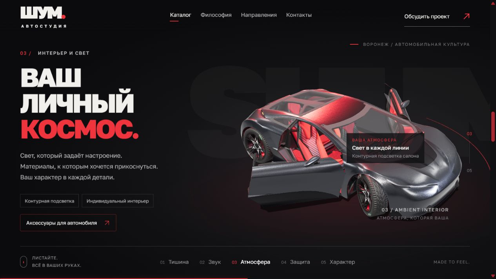
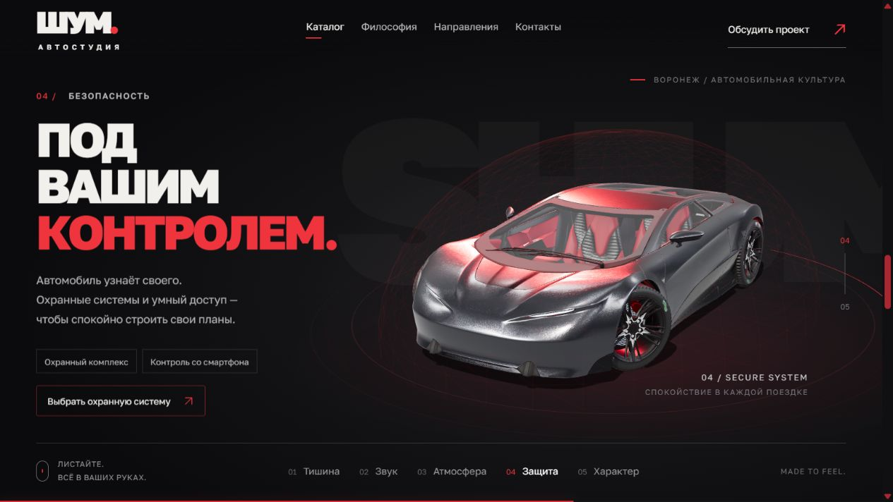
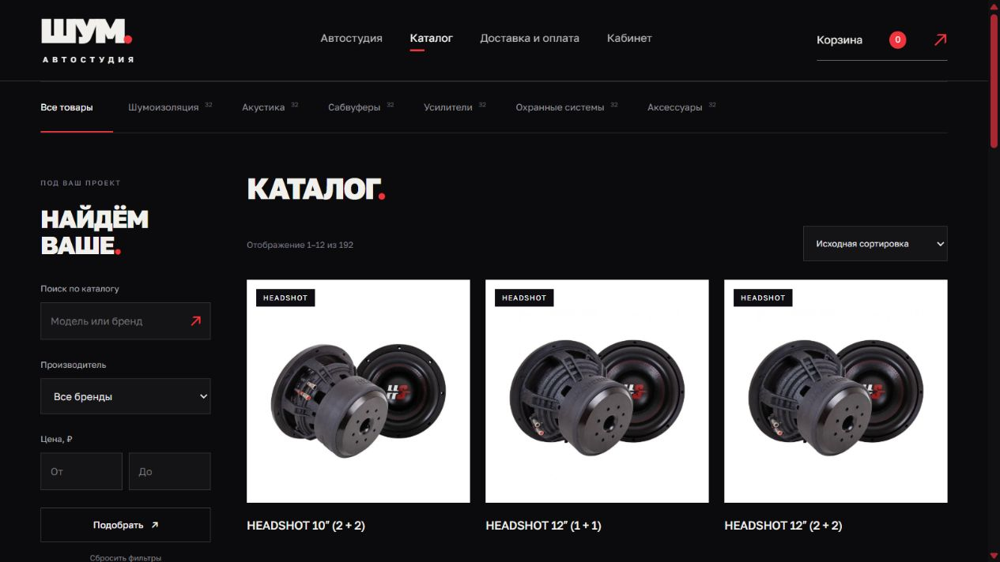
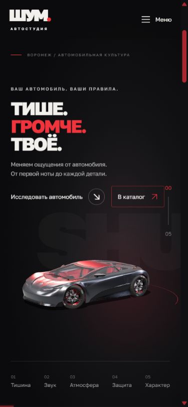
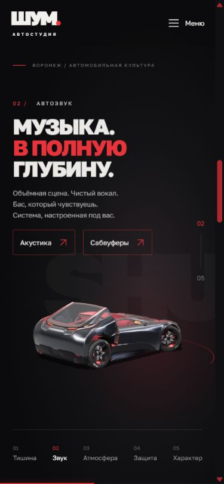
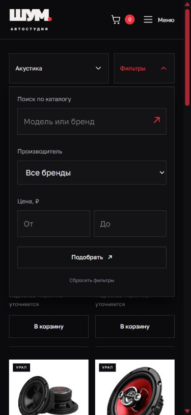

Погружение в бренд
Слоган, тон коммуникации и автомобильная эстетика задают настроение с первого экрана.
Цифровой опыт для тех,
кто чувствует автомобиль.
ШУМ — автостудия и магазин, где звук, комфорт, безопасность и характер автомобиля складываются в персональный опыт.
Сайт знакомит с направлениями через интерактивную 3D-сцену, а затем помогает перейти к выбору оборудования и обсуждению проекта со студией.
01—05
Главная страница устроена как путешествие вокруг автомобиля. Вместо длинного списка услуг — пять последовательных направлений: тишина, звук, атмосфера, защита и характер. Движение сцены поддерживает историю каждого из них.
Контрастная типографика, глубокий чёрный и красный свет создают выразительный вход в мир студии.

При прокрутке автомобиль меняет положение, открывает двери, капот или багажник. Сцена связывает услугу с конкретной частью машины и делает знакомство с ней наглядным.


Визуальная система опирается на плотный гротеск, лаконичную сетку и технические детали интерфейса. Красный направляет внимание на смысловые акценты и действия.
КРУПНО. УВЕРЕННО.
ПО ДЕЛУ.
Каталог продолжает визуальный язык главной, но ставит на первое место подбор товара. Категории, поиск, производитель, цена и сортировка помогают сориентироваться в ассортименте.

Быстрый переход к нужному направлению.
Поиск, бренд и диапазон цены.
Фото, название, цена и статус наличия.
На небольшом экране сцена и текст перестраиваются вертикально, а меню и фильтры занимают компактные панели. История остаётся последовательной и узнаваемой.



Слоган, тон коммуникации и автомобильная эстетика задают настроение с первого экрана.
Прокрутка и навигация по пяти направлениям связывают услуги студии с 3D-автомобилем.
Из сцен пользователь переходит в релевантные категории, а в каталоге уточняет поиск фильтрами.
Кнопки обсуждения проекта и контакты дают возможность перейти от знакомства к консультации.
Автомобиль — это больше, чем способ добраться из точки А в точку Б. И сайт продаёт это с первого взгляда.
ОТКРЫТЬ САЙТ ↗